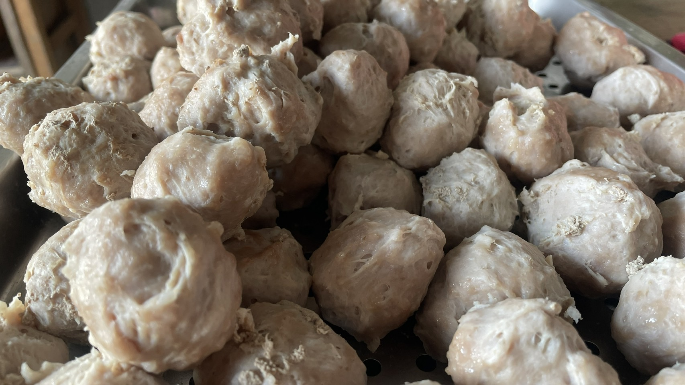
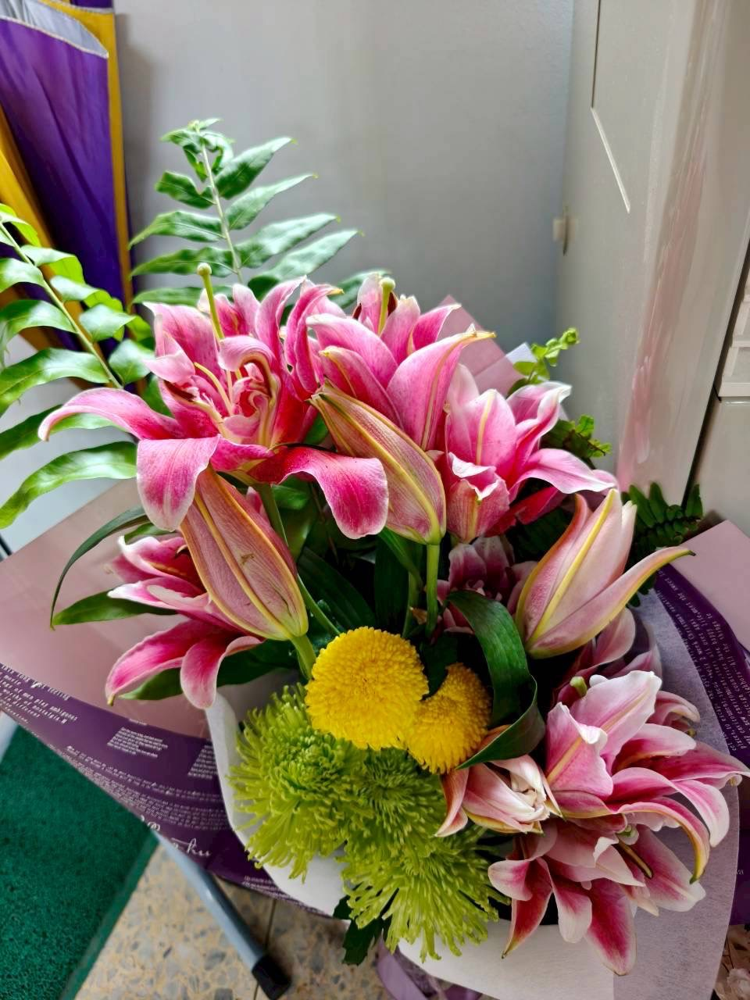
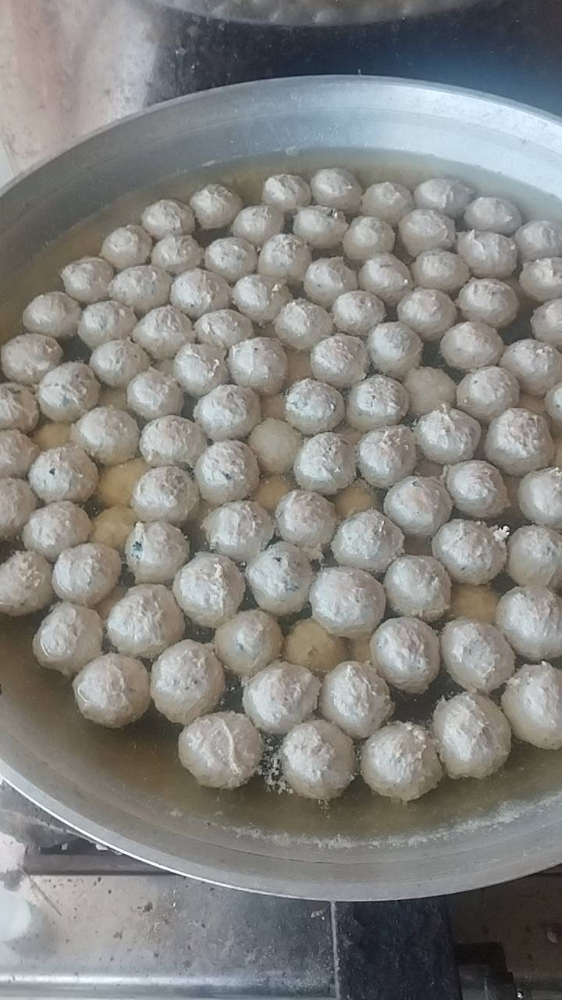
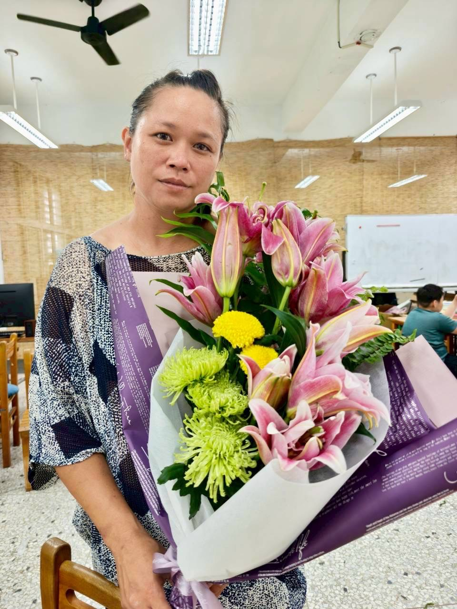
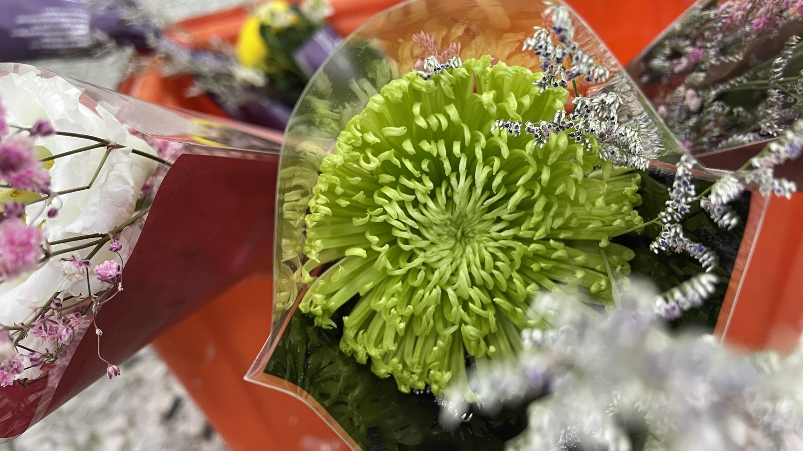
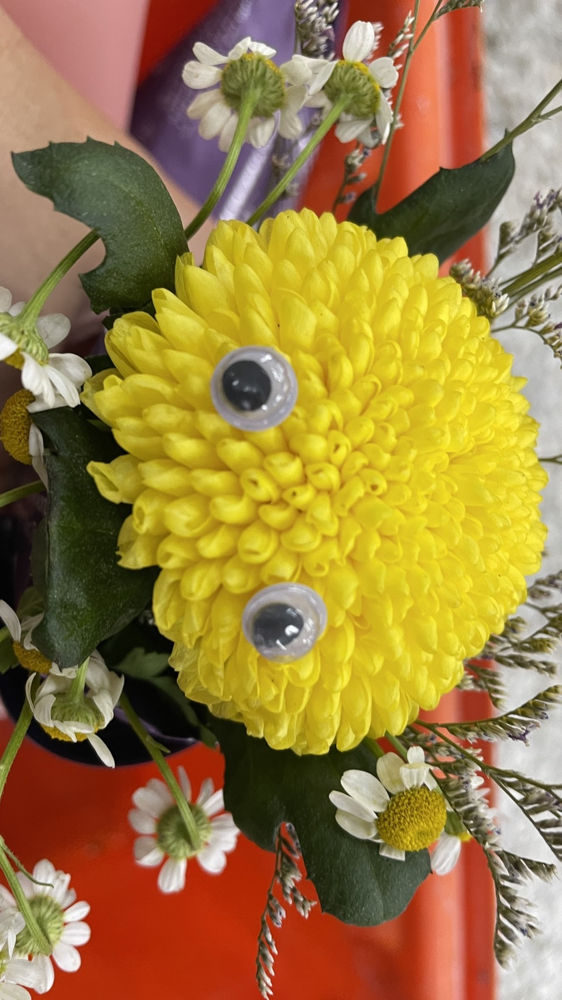
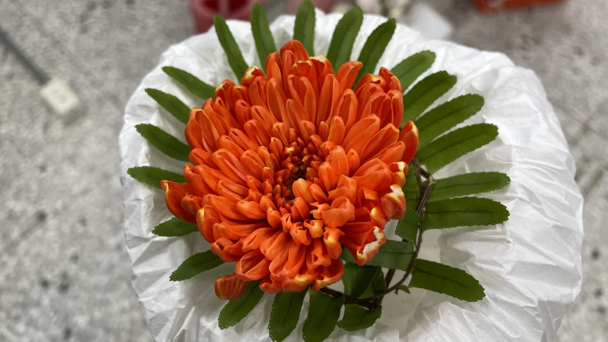
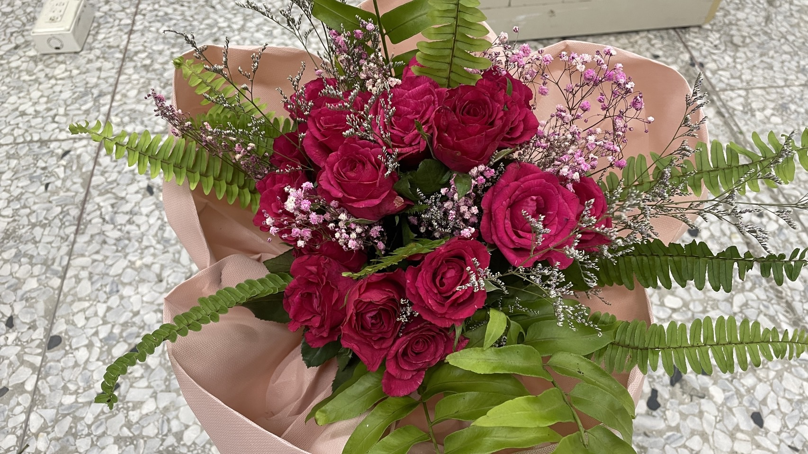
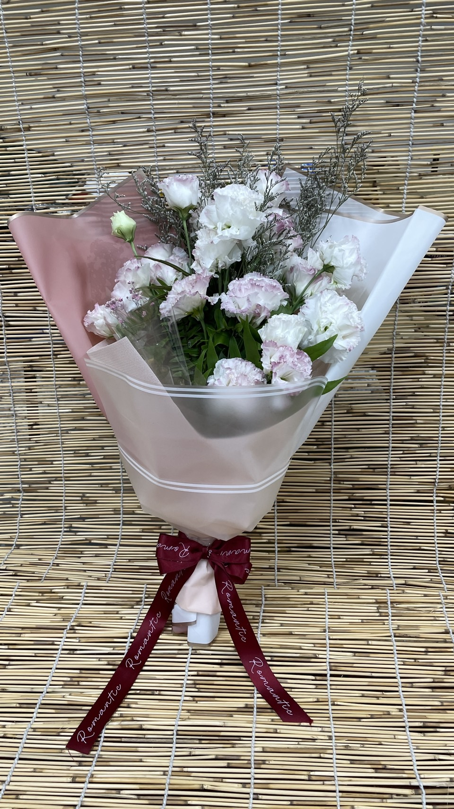
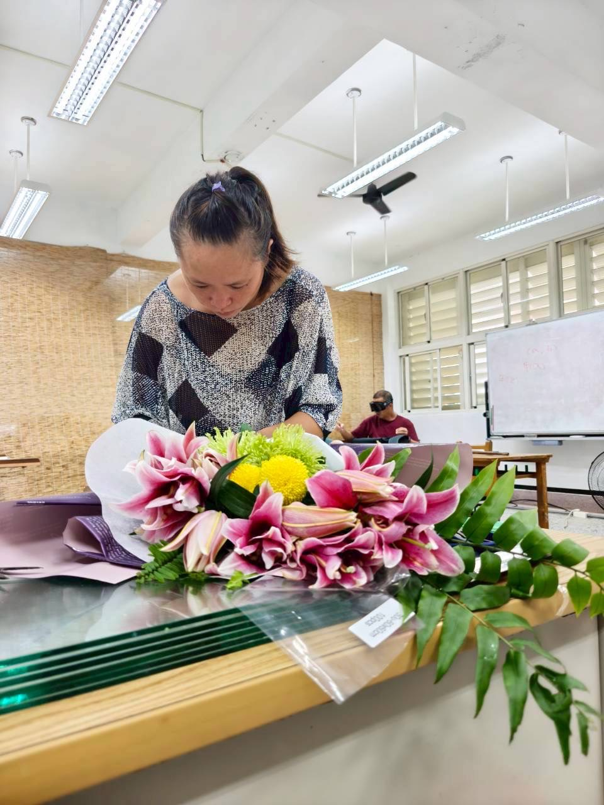

SKILL ONE ・ 貢丸製作與販賣
堅持純手工製作，不使用任何機器

學習動機
我是一位單親媽媽，在資源有限的情況下，老師帶著我創立〔貢享丸子〕這個品牌，跟著經驗豐富的老師傅學習製作，希望自己能學到一技之長，對生活經濟有實質的幫助。
技能學習歷程
貢享丸子堅持純手工製作，不使用任何機器——因為機器製作出來的口感不一樣。製作過程中，每一個步驟都需要詳細記錄。最大的挑戰，是控制溫度，以及打出肉漿恰到好處的黏彈性，只要有一點失誤，口感就會變得鬆散。經過一次又一次的練習，我才漸漸抓到屬於自己的時間感和溫度感。
實作成果
一開始只是想試賣看看，沒想到大家都很捧場，一個介紹一個，生意就這樣慢慢做起來了。很感動大家的善意和支持，這份溫暖也是我堅持下去的動力。
變現紀錄
第一筆收入是在市集擺攤試賣時開始的。原本只是想試試水溫，沒想到現場反應很好，吃過的人會主動回購，也會介紹給身邊朋友。後來漸漸轉為以 LINE 私訊接單為主，客人下單後我再依訂單製作，新鮮現做、不囤貨，也讓我能更彈性安排製作時間，兼顧照顧孩子的生活步調。
接單方式
新鮮現做、不囤貨。下單後依訂單製作，把最剛好的口感送到你手上。
SKILL TWO ・ 畢業花束設計與接單
補上小鎮畢業季的那束花







學習動機
豐濱街上原本唯一的一家花店歇業之後，每到畢業季，家長們想買束花給孩子，卻找不到地方買。老師和我都覺得，這是一個機會——與其讓這個需求一直空在那裡，不如自己學起來，補上這個缺口，也讓自己多一項可以發展的技能。
學習歷程
學習過程中最困難的，是新鮮花材和包裝材料都得從外縣市運來，必須開車到花蓮市區採買，交通和成本都是不小的負擔，這也是這次學習中遇到最大的挑戰。包裝技巧則是靠自己看網路影片自學，一開始完全摸不著頭緒，常常做不出心中想要的樣子。但經過三場畢業典禮的實戰練習，雙手漸漸越來越靈巧、越來越熟練。雖然過程很累，但每次完成作品，都很有成就感。
實作成果
從一開始的口頭接單，到能獨立完成一束束畢業花，每一件作品都記錄在上方的作品集裡——那是雙手一次比一次熟練的痕跡。
接單方式 ・ 花束品項與定價
隨著畢業季訂單越來越多，我們建立了線上訂購單，讓家長可以直接填寫花束類型、送達學校與時間，下單後完成匯款對帳，就能準時把祝福送到孩子手上。從一開始的口頭接單，到現在有系統化的訂購流程，是這段時間最大的成長。
ABOUT ・ 關於小雪
小雪是一位 33 歲的單親媽媽。在資源有限的日子裡，她沒有等待，而是把握每一個機會，踏實地學會兩門手藝——純手工的貢丸，與一束束畢業季的花。一次次的練習裡，她抓到了屬於自己的溫度與手感，也用這雙手，為自己和孩子撐起更穩的生活。
貢享丸子
掃描 QR code
加 LINE 私訊接單
豐濱 cepo'
行動花店
線上填寫花束類型、
送達學校與時間